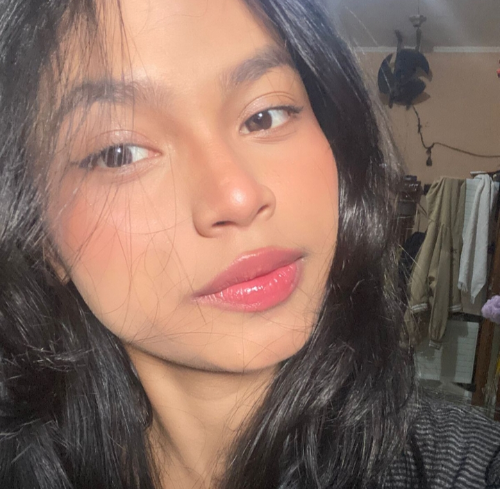
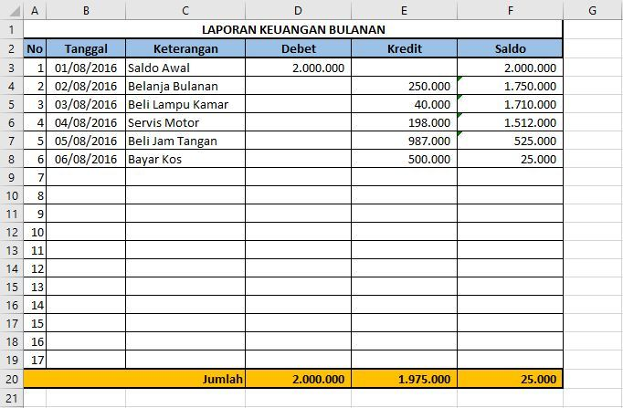
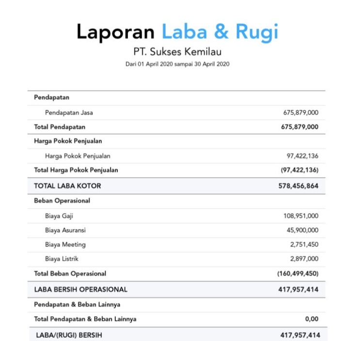
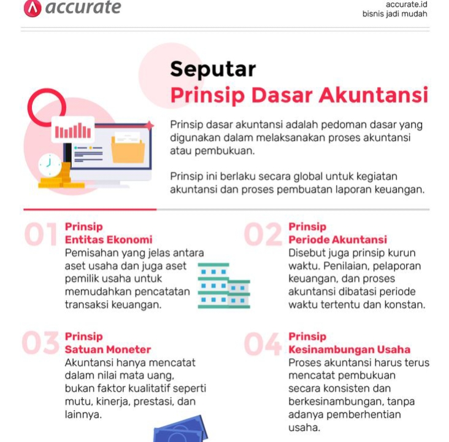

Mahasiswa S1 Akuntansi Universitas Gunadarma yang memiliki minat dalam bidang laporan keuangan, analisis keuangan, dan sistem informasi akuntansi.
Lihat ProjectSaya adalah mahasiswa program studi Akuntansi S1 di Universitas Gunadarma yang memiliki ketertarikan dalam bidang akuntansi keuangan, analisis laporan keuangan, serta pengelolaan data keuangan secara sistematis dan terstruktur. Selama masa perkuliahan, saya mempelajari berbagai konsep dasar akuntansi seperti penyusunan laporan keuangan, jurnal akuntansi, neraca, laporan laba rugi, serta analisis keuangan perusahaan. Saya memiliki ketelitian yang tinggi, kemampuan analisis yang baik, serta mampu bekerja secara terstruktur dalam mengolah data keuangan. Saya juga tertarik untuk terus mengembangkan kemampuan dalam penggunaan teknologi seperti spreadsheet dan sistem informasi akuntansi untuk mendukung pekerjaan di bidang keuangan dan akuntansi di masa depan.
S1 Akuntansi
2025 - Sekarang
Mempelajari akuntansi keuangan, akuntansi manajemen, serta sistem informasi akuntansi.
Jurusan : Akuntansi
2022 - 2025
Mempelajari dasar ekonomi, akuntansi, dan manajemen.
Memahami proses pencatatan jurnal, buku besar, dan penyusunan laporan keuangan.
Mampu membaca dan menganalisis laporan keuangan perusahaan.
Menggunakan Excel untuk pengolahan data keuangan dan pembuatan laporan.
Memahami konsep penggunaan teknologi dalam sistem pencatatan keuangan.

Menyusun laporan laba rugi, neraca, dan arus kas menggunakan data transaksi sederhana.

Menganalisis kinerja keuangan perusahaan menggunakan rasio keuangan.

Membuat pencatatan transaksi ke dalam jurnal umum hingga buku besar.
Silakan hubungi saya melalui: